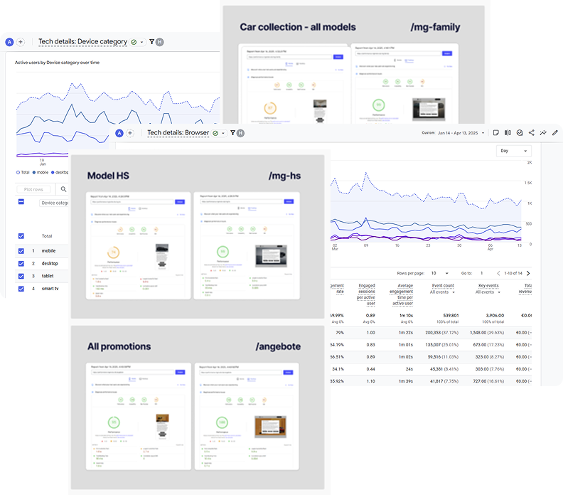
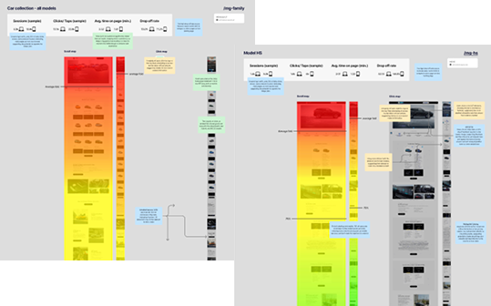
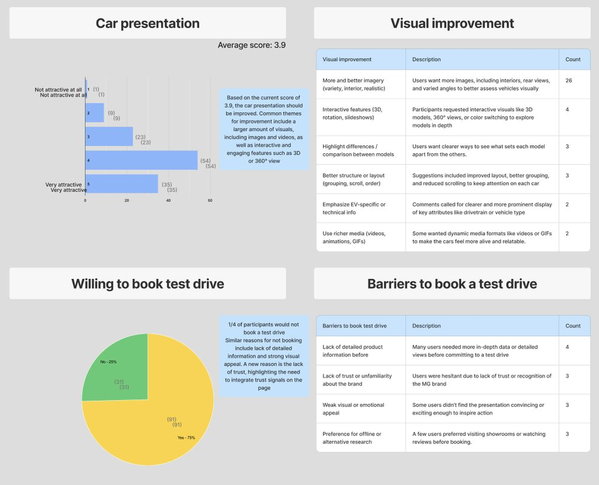
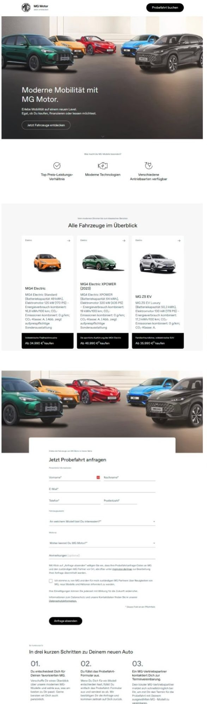
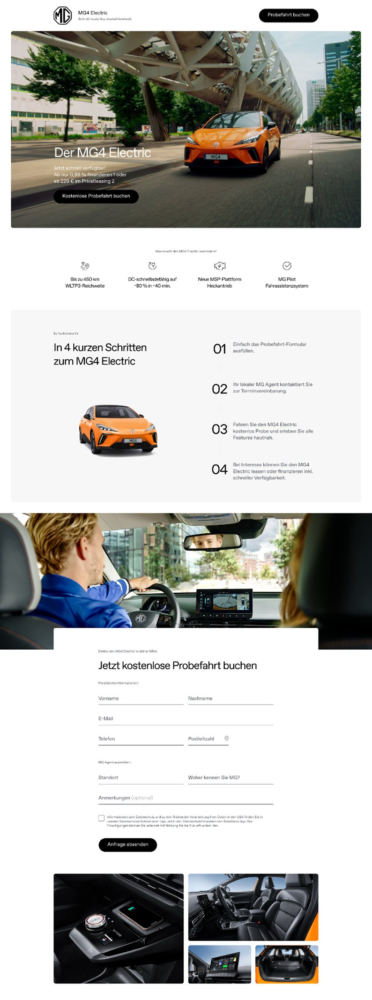

A four-step diagnostic
-
Technical Analysis — Google Analytics
This analysis covers comparing engagement across different browsers and devices, as well as identifying any potential problems that directly affect lead generation, such as slow page speed or technical bugs

-
Hotjar Analysis — mouse tracking
Hotjar analysis via mouse tracking is a technique used to study and understand user behavior on a website by recording and analyzing mouse movements, clicks, scrolls, and hovers. It provides valuable insights into how users interact with a site — helping identify usability issues, optimize the interface, and improve the overall experience

-
Online Survey & User Feedback — Useberry (n=122)
To validate user perceptions of the MG website, I ran a quantitative survey using Useberry on two key landing pages: /mg-family and /mg-hs. The goal was to understand user demographics, browsing motivation, and perceived usability — and to identify which page structure drives higher engagement and trust

-
Gather Result
Bringing the three streams together — technical analytics, Hotjar behavior, and the Useberry survey — I synthesized the findings into a clear picture of where the page was losing users and why. This became the basis for a prioritized, testable set of design actions, detailed in the Solution below
Five prioritized findings
- Low CTA visibility. Key call-to-actions were placed too low; users dropped off after the first scroll, reducing conversions
- Unclear click behavior. Many users clicked non-interactive hero visuals and logos, revealing unclear affordances and unmet expectations
- Form friction. The booking form was perceived as clear but overly long, causing abandonment before submission
- Low emotional engagement. Despite strong clarity and navigation, pages felt informational rather than inspiring, limiting deeper interaction
Before & after

Generic multi-model page — weak hierarchy, buried CTAs, long unfocused form

Focused MG4 story — clear hero, visible CTAs, simplified booking flow and richer product sections
The analysis produced a set of data-backed UX recommendations that informed MG's upcoming landing-page redesign. Connecting behavioral analytics, CRO audits, and user feedback, I defined five prioritized design actions — improving CTA visibility, visual storytelling, layout hierarchy, and form simplicity — ready for validation through A/B testing
- Learned to manage client expectations and not take feedback personally
- Faced internal misalignment within the team, which taught me the importance of clear communication and shared priorities
- Realized the need to be more structured and assertive when presenting findings
- Strengthened my ability to translate analytics into actionable design decisions, bridging CRO data and human-centered design